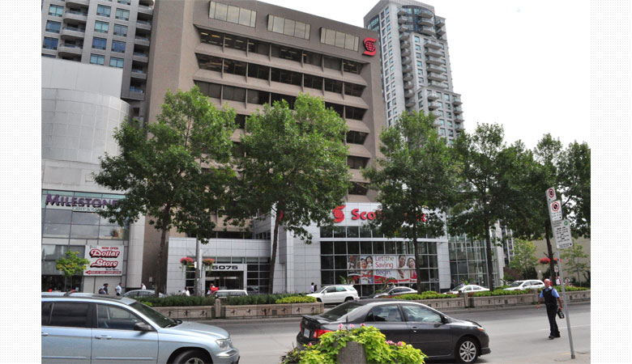

【カナダ / トロント・モントリオール】
アットホームな環境で安心して勉強でき、豊富なコースも特徴的！
UMC / ユーエムシーUpper Madison College (アッパー・メディソン・カレッジ)

Upper Madison College (アッパー・メディソン・カレッジ)
アットホームな環境で安心して勉強でき、豊富なコースも特徴的！
アットホームな環境で安心して勉強でき、豊富なコースも特徴的！

ロケーション
トロント校は閑静な住宅地に位置し地下鉄駅からキャンパスまで直結してとても便利です。
ダウンタウンのど真ん中に位置するモントリオール校は、フェスティバルが行われる広場の目の前にあります。
トロント校は閑静な住宅地に位置し地下鉄駅からキャンパスまで直結してとても便利です。
ダウンタウンのど真ん中に位置するモントリオール校は、フェスティバルが行われる広場の目の前にあります。
学校のモットーを大事に
“CONNECTING THE WORLD WITH COMMITMENT & COMPASSION”「責任と思いやりをもって世界と繋がる」がUMCのモットーです！
“CONNECTING THE WORLD WITH COMMITMENT & COMPASSION”「責任と思いやりをもって世界と繋がる」がUMCのモットーです！
なによりもアットホームさが持ち味
生徒、教師、スタッフ間の距離が近く、お互いを名前で呼び合うアットホームな環境だから、困った時でも安心です。
生徒、教師、スタッフ間の距離が近く、お互いを名前で呼び合うアットホームな環境だから、困った時でも安心です。
よく学び、よく遊ぶ理想の海外生活を実現
5週間毎に学校全体校内外行事を行い、クラスメートだけでなく、 他のクラスの生徒や教師、スタッフ、地元市民との交流を深めます。
5週間毎に学校全体校内外行事を行い、クラスメートだけでなく、 他のクラスの生徒や教師、スタッフ、地元市民との交流を深めます。
通訳・翻訳コースで夢を叶える
ただ語学を学ぶだけでなく、通訳・翻訳コースを通してスキルアップ！
帰国後にも必ず役に立つスキルを身に付けることが出来ます。
ただ語学を学ぶだけでなく、通訳・翻訳コースを通してスキルアップ！
帰国後にも必ず役に立つスキルを身に付けることが出来ます。
日本人スタッフ常勤だから安心
日本人スタッフがいないと少し不安だと思われる方もご安心下さい。
アドバイスはもちろん、学校や生活での悩みも気軽にご相談頂けます。
日本人スタッフがいないと少し不安だと思われる方もご安心下さい。
アドバイスはもちろん、学校や生活での悩みも気軽にご相談頂けます。
画面をクリックするとビデオが再生されます。
＜Cambridge International College English Course＞
＜Cambridge International College English Course＞
＜現地スタッフからのコメント＞
UMCトロントキャンパスでカウンセラーとして勤務しておりますケンタロウと申します。
自分がカナダに来た当初は日本語サポートもほとんど受ける事無く大変苦労しましたので、今は留学生の皆さんをサポートできる仕事に非常にやりがいを感じています。そして今の私の目標は留学生の方一人一人に「日本に帰りたくない！もっとカナダにいたい！」と思ってもらえるくらいカナダで充実した楽しい時間を過ごしてもらう事です。スタッフ一同皆さんが素晴らしい時間をトロントで過ごせるよう精一杯サポートさせていただきます！
学校のモットーを大事に
“CONNECTING THE WORLD WITH COMMITMENT & COMPASSION”
「責任と思いやりをもって世界と繋がる」がUMCのモットーです！
なによりもアットホームさが持ち味
生徒、教師、スタッフ間の距離が近く、お互いを名前で呼び合うアットホームな環境だから、困った時でも安心です。
よく学び、よく遊ぶ理想の海外生活を実現
4週間毎に学校全体校内外行事を行い、クラスメートだけでなく、 他のクラスの生徒や教師、スタッフ、地元市民との交流を深めます。
通訳・翻訳コースで夢を叶える
ただ語学を学ぶだけでなく、通訳・翻訳コースを通してスキルアップ！
帰国後にも必ず役に立つスキルを身に付けることが出来ます。
日本人スタッフ常勤だから安心
日本人スタッフがいないと少し不安だと思われる方もご安心下さい。
アドバイスはもちろん、学校や生活での悩みも気軽にご相談頂けます。